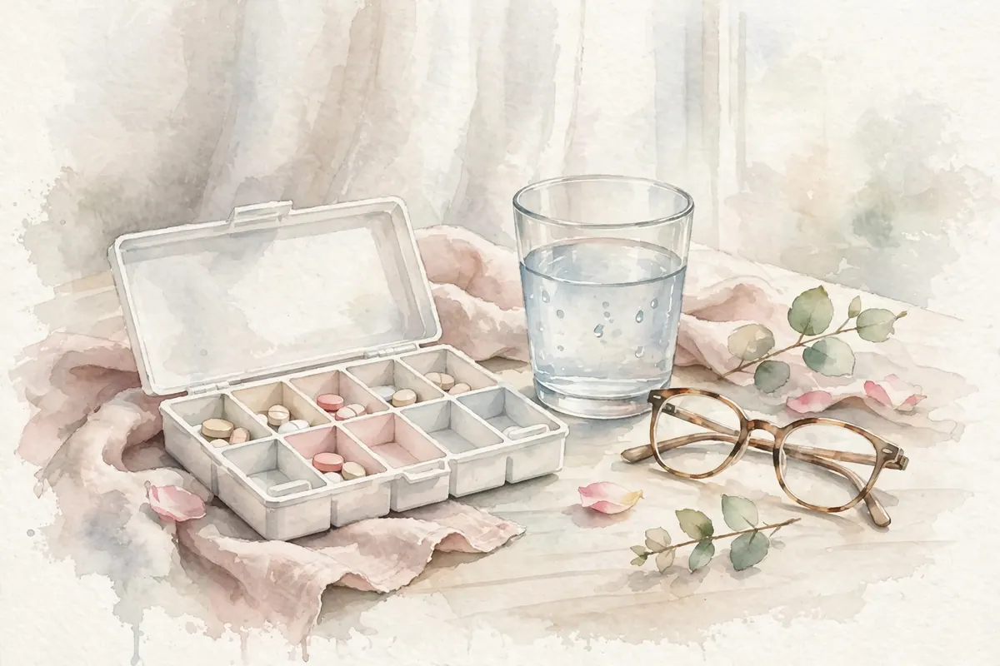
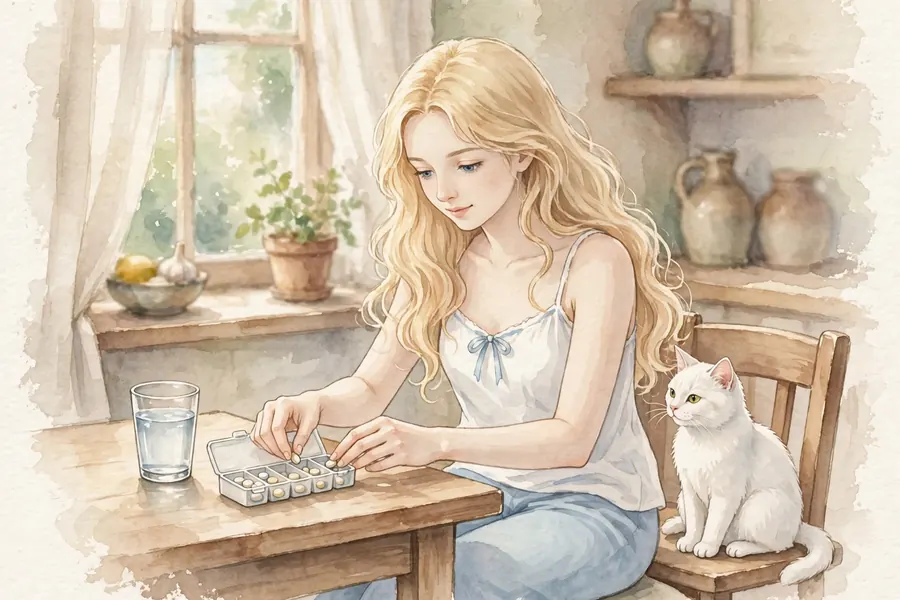

トップ ＞ インナーケア・サプリ ＞ シニア向けサプリの表示と、家族で確認しておきたいポイント
シニア向けサプリの表示と、家族で確認しておきたいポイント

年齢を重ねた家族のためにサプリを選ぶとき、表示の見方が若い世代向けのものと少し違います。私の施術の現場でも、ご家族の分をまとめて買っている、という話をよく聞きます。シニア向けと書かれた商品には、粒の大きさや1日の目安量など、年代に配慮した表示が入っていることがあります。この記事では、シニア向けタイプの表示の読み方と、家族で確認しておきたいポイントを整理します。
シニア向けの表示で見るポイント
まず確認したいのは、1日の目安量と、粒の大きさ・形状です。シニア向けの商品では、1回に飲む粒数が少なめに設計されていたり、粒が小さめに作られていたりすることがあります。パッケージには「1日1粒」「1日2粒」といった目安量と、粒の大きさの案内が書かれています。飲み込みにくさを感じる場合は、粒の大きさや形状の表示を、ほかの商品と見比べてみてください。粉末タイプやドリンクタイプが向いている場合もあります。
次に、対象年齢や年代の表示です。「シニア向け」「高齢者向け」といった言葉が入っている商品では、想定している年代が表示されていることがあります。年代の表示は、あくまで目安です。本人の体調や、ふだんの食事の内容によって、必要なものは変わります。表示の年代だけで決めるのではなく、本人の生活に合っているかどうかで考えるのが基本です。
もうひとつ、パッケージの読みやすさも確認点です。文字の大きさ、開けやすさ、1回分ずつの個包装になっているかどうか。個包装の場合は、1包が1回分という設計で、飲み忘れや飲みすぎを防ぎやすくなります。フタの開けにくさや、文字の小ささが気になる場合は、家族が開封や管理を手伝う、という段取りも考えられます。
家族で確認しておきたいこと
家族の分を選ぶときに、いちばん大切なのは、飲んでいる薬との組み合わせです。サプリの成分が、薬の働きに影響することがあります。パッケージに「薬を飲んでいる方は医師・薬剤師に相談してください」といった案内がある場合は、必ず相談してから決めます。家族だけで判断せず、かかりつけの医師や薬剤師に、飲んでいる薬の名前とサプリの成分名を伝えて確認するのが基本です。
複数のサプリを併用している場合も、成分の重なりを確認しておきます。同じ成分を含むサプリを2種類飲んでいると、1日の目安量を超えてしまうことがあります。家族で飲んでいるサプリの一覧を作っておき、成分名を見比べる、という方法があります。成分名の表記ゆれがある場合は、パッケージの原材料名の欄で確認します。
保管場所と、飲み忘れ・飲みすぎを防ぐ工夫も、家族で共有しておきたい点です。ピルケースに1日分ずつ分けておく、カレンダーに飲んだ印をつける、といった方法があります。保管場所は、家族がみんな分かる場所に決めておき、賞味期限の確認も家族で分担すると、見落としが減ります。本人の意思も大切です。家族が勝手に買って渡すのではなく、本人が続けたいかどうか、飲みにくさはないかを、本人の言葉で確かめてから決めてください。
続け方の段取り
始めるときは、まず少量・短期間から試すのが無理のないやり方です。定期便の場合は、回数の縛りや休止・解約の条件を、申し込む前に家族で確認しておきます。初回だけ安くて2回目以降の価格が変わる、といった表示もあるので、1回あたりの価格を計算してから決めます。返品・交換の条件も、パッケージや購入時の案内で確認しておきましょう。
続けているあいだに、体調の変化があれば、使用をいったんやめて、医師や薬剤師に相談してください。サプリは食品であり、薬ではありません。体調の不調が続く場合は、サプリで対応しようとせず、医療機関を受診するのが基本です。この記事はシニア向けサプリの表示の読み方の案内であり、商品ごとに表示がある場合は、そちらが優先です。

セラフィナ「家族の分を選ぶときは、本人の気持ちも一緒に確認してね。続けるのは本人だから」

セラフィナ｜美容の道具箱の案内役
「量と表示が分かれば、美容は失敗しない。」——セラフィナと白猫のモコが、買う前のチェックポイントを案内します。綺麗になりたい気持ちに正直に、でも表示は冷静に読むのが、このサイトの約束です。